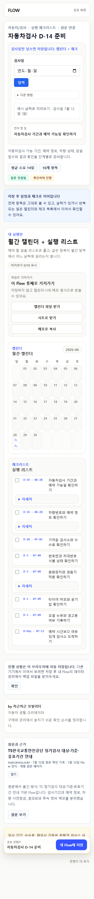
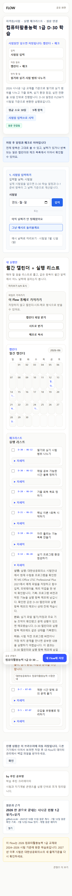
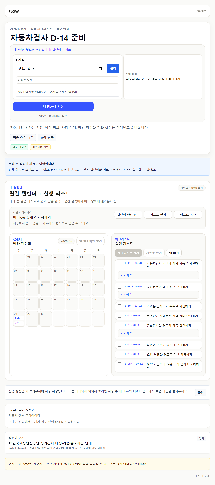
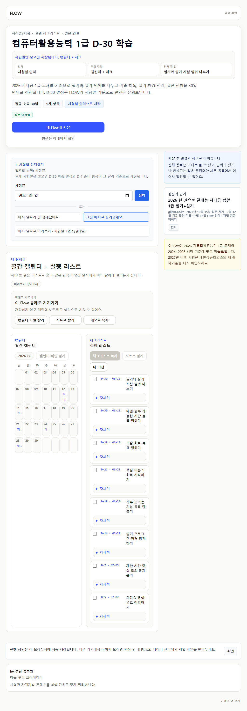

2026-07-12 source currentness
차량검사·컴활 현재 범위 재검증
링크가 열린다는 사실만 확인하지 않고, 현재 원문이 실제 Flow 행을 뒷받침하는지와 연도·급수 경계가 화면에 보이는지를 다시 판정했습니다.
2재검증 public route
2현재 범위로 유지
0horizontal overflow
0실사용자 관찰 세션
판정
차량검사: 현재 TS 정기검사 기준 페이지로 근거를 좁히고, 예전 45일·등록증 준비 문구를 실제 검사 가능 기간과 예약 정보 확인으로 바꿨습니다.
컴활: 2026 교재는 현재 유효하므로 유지하되 1급, Office 2021, 2027년 재확인 경계를 화면에 드러냈습니다.
디자인 완료로 보지 않는 이유
1024px 컴활 화면은 달력 열이 길게 비고 실행 목록 열은 좁아 제목이 많이 줄바꿈됩니다. 출처 최신성은 닫혔지만 public Flow의 wide 정보 구조와 공통 시각 위계는 다음 디자인 개편에서 다시 다뤄야 합니다.
모바일


1024px

